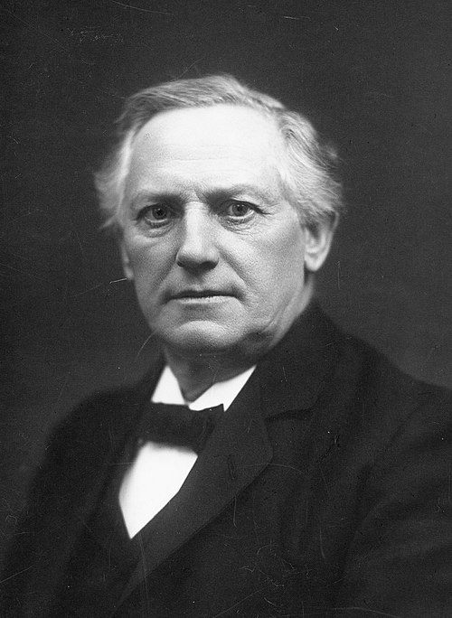

Jørgen Pedersen Gram (1850–1916) était un mathématicien et ingénieur danois.
Il est principalement connu pour ses contributions en analyse et en algèbre linéaire,
notamment la matrice de Gram et le procédé d’orthogonalisation de
Gram-Schmidt,
utilisés dans l’étude des produits scalaires, des projections orthogonales et des bases orthonormées.
Ses travaux ont également influencé les méthodes numériques et la statistique. Il est mort en 1916,
renversé par un cycliste, une fin inattendue.

Jørgen Pedersen Gram
\footnotetext{Le procédé d’orthogonalisation porte aussi le nom d’Erhard Schmidt (13 janvier 1876 – 6
décembre 1959), mathématicien allemand né à Dorpat, dans l’ancien Empire russe. Schmidt est reconnu
comme l’un des pionniers de l’analyse fonctionnelle abstraite moderne, particulièrement par ses travaux
sur la généralisation du procédé d’orthogonalisation aux espaces vectoriels de dimension infinie,
aujourd’hui appelés espaces de Hilbert.}
Dans ce mémoire, on se place dans l’espace euclidien \( (\R^n, \langle \cdot, \cdot \rangle) \) muni du
produit scalaire canonique usuel qui induit la norme euclidienne \( \|\cdot\|_2 \). On rappelle que,
dans un espace vectoriel, toute application linéaire est représentée, relativement à une base donnée,
par une matrice, et que réciproquement, toute matrice définit une application linéaire. Ainsi, dans ce
cadre, il est naturel d’identifier une matrice à l'application linéaire qu'elle représente.
Soient \( n, p \in \N^* \), \( 1 \leq i \leq n \) et \( 1 \leq j \leq p \).
On définit la matrice élémentaire \( E_{i,j} \in M^{n \times p}(\mathbb{K}) \) par :
\[
E_{i,j} = (\delta_{k,i} \delta_{l,j})_{1 \leq k \leq n,\ 1 \leq l \leq p},
\]
où \( \delta \) désigne le symbole de Kronecker.
Symbole de Kronecker.
On appelle symbole de Kronecker le nombre noté \( \delta _{i,j} \)
qui vaut \( 1 \) si \( i=j \) , et \( 0 \) sinon.
Prenons \( n = p = 3 \), et considérons \( i = 2 \), \( j = 3 \).
Alors la matrice élémentaire \( E_{2,3} \in M_{3}(\mathbb{K}) \) est donnée par :
\[
E_{2,3} =
\begin{pmatrix}
0 & 0 & 0 \\
0 & 0 & 1 \\
0 & 0 & 0
\end{pmatrix}.
\]
Règle de Cramer
Soient \( A \in \mathbb{K}^{n \times n} \) une matrice inversible et \( b \in \mathbb{K}^n \).
Alors les coefficients de l’unique solution \( y = (y_1, \ldots, y_n)^t \in \mathbb{K}^n \)
du système linéaire \( A y = b \) sont donnés par
\[
y_i = \frac{\det (A_i)}{\det (A)},
\]
où \( A_i \in \mathbb{K}^{n \times n} \) désigne la matrice obtenue à partir de \( A \) en
remplaçant
sa \( i \)-ième colonne par le vecteur \( b \).